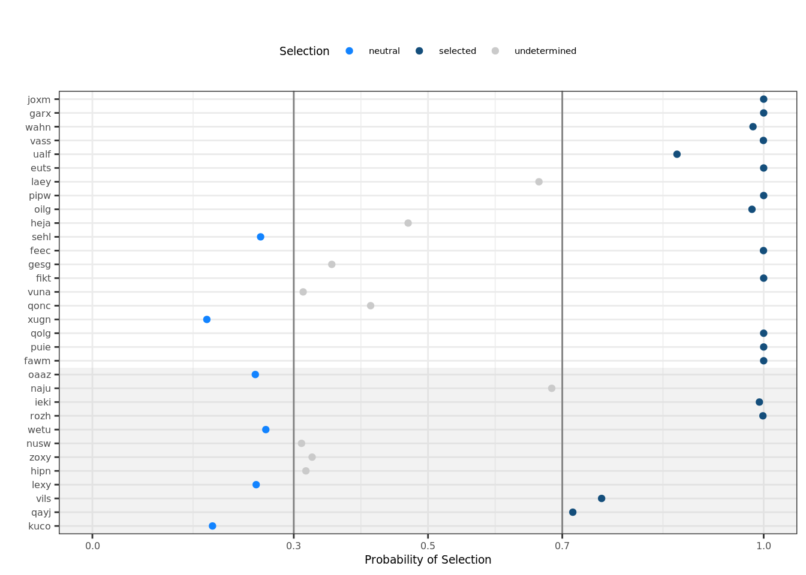

Selection Models
Daniel J. Kunz & Davis J. McCarthy
Last updated: 2019-10-30
Checks: 6 1
Knit directory: fibroblast-clonality/
This reproducible R Markdown analysis was created with workflowr (version 1.4.0). The Checks tab describes the reproducibility checks that were applied when the results were created. The Past versions tab lists the development history.
The R Markdown file has unstaged changes. To know which version of the R Markdown file created these results, you’ll want to first commit it to the Git repo. If you’re still working on the analysis, you can ignore this warning. When you’re finished, you can run wflow_publish to commit the R Markdown file and build the HTML.
Great job! The global environment was empty. Objects defined in the global environment can affect the analysis in your R Markdown file in unknown ways. For reproduciblity it’s best to always run the code in an empty environment.
The command set.seed(20180807) was run prior to running the code in the R Markdown file. Setting a seed ensures that any results that rely on randomness, e.g. subsampling or permutations, are reproducible.
Great job! Recording the operating system, R version, and package versions is critical for reproducibility.
Nice! There were no cached chunks for this analysis, so you can be confident that you successfully produced the results during this run.
Great job! Using relative paths to the files within your workflowr project makes it easier to run your code on other machines.
Great! You are using Git for version control. Tracking code development and connecting the code version to the results is critical for reproducibility. The version displayed above was the version of the Git repository at the time these results were generated.
Note that you need to be careful to ensure that all relevant files for the analysis have been committed to Git prior to generating the results (you can use wflow_publish or wflow_git_commit). workflowr only checks the R Markdown file, but you know if there are other scripts or data files that it depends on. Below is the status of the Git repository when the results were generated:
Ignored files:
Ignored: .DS_Store
Ignored: .Rhistory
Ignored: .Rproj.user/
Ignored: .vscode/
Ignored: analysis/figure/
Ignored: code/.DS_Store
Ignored: code/selection/.DS_Store
Ignored: code/selection/.Rhistory
Ignored: code/selection/figures/
Ignored: data/.DS_Store
Ignored: logs/
Ignored: src/.DS_Store
Ignored: src/Rmd/.Rhistory
Untracked files:
Untracked: .dockerignore
Untracked: .dropbox
Untracked: .snakemake/
Untracked: Rplots.pdf
Untracked: Snakefile_clonality
Untracked: Snakefile_somatic_calling
Untracked: analysis/.ipynb_checkpoints/
Untracked: analysis/assess_mutect2_fibro-ipsc_variant_calls.ipynb
Untracked: analysis/cardelino_fig1b.R
Untracked: analysis/cardelino_fig2b.R
Untracked: code/analysis_for_garx.Rmd
Untracked: code/selection/data/
Untracked: code/selection/fit-dist.nb
Untracked: code/selection/result-figure.R
Untracked: code/yuanhua/
Untracked: data/Melanoma-RegevGarraway-DFCI-scRNA-Seq/
Untracked: data/PRJNA485423/
Untracked: data/canopy/
Untracked: data/cell_assignment/
Untracked: data/cnv/
Untracked: data/de_analysis_FTv62/
Untracked: data/donor_info_070818.txt
Untracked: data/donor_info_core.csv
Untracked: data/donor_neutrality.tsv
Untracked: data/exome-point-mutations/
Untracked: data/fdr10.annot.txt.gz
Untracked: data/human_H_v5p2.rdata
Untracked: data/human_c2_v5p2.rdata
Untracked: data/human_c6_v5p2.rdata
Untracked: data/neg-bin-rsquared-petr.csv
Untracked: data/neutralitytestr-petr.tsv
Untracked: data/raw/
Untracked: data/sce_merged_donors_cardelino_donorid_all_qc_filt.rds
Untracked: data/sce_merged_donors_cardelino_donorid_all_with_qc_labels.rds
Untracked: data/sce_merged_donors_cardelino_donorid_unstim_qc_filt.rds
Untracked: data/sces/
Untracked: data/selection/
Untracked: data/simulations/
Untracked: data/variance_components/
Untracked: figures/
Untracked: output/differential_expression/
Untracked: output/differential_expression_cardelino-relax/
Untracked: output/donor_specific/
Untracked: output/line_info.tsv
Untracked: output/nvars_by_category_by_donor.tsv
Untracked: output/nvars_by_category_by_line.tsv
Untracked: output/variance_components/
Untracked: qolg_BIC.pdf
Untracked: references/
Untracked: reports/
Untracked: src/Rmd/DE_pathways_FTv62_callset_clones_pairwise_vs_base.unst_cells.carderelax.Rmd
Untracked: src/Rmd/Rplots.pdf
Untracked: src/Rmd/cell_assignment_cardelino-relax_template.Rmd
Untracked: tree.txt
Unstaged changes:
Modified: analysis/selection_models.Rmd
Note that any generated files, e.g. HTML, png, CSS, etc., are not included in this status report because it is ok for generated content to have uncommitted changes.
These are the previous versions of the R Markdown and HTML files. If you’ve configured a remote Git repository (see ?wflow_git_remote), click on the hyperlinks in the table below to view them.
| File | Version | Author | Date | Message |
|---|---|---|---|---|
| Rmd | 74a22f4 | d-j-k | 2018-11-14 | add final plots for selection analysis |
| html | 8729e02 | davismcc | 2018-11-09 | Build site. |
| html | 0540cdb | davismcc | 2018-09-02 | Build site. |
| html | f0ed980 | davismcc | 2018-08-31 | Build site. |
| html | ca3438f | davismcc | 2018-08-29 | Build site. |
| html | e573f2f | davismcc | 2018-08-27 | Build site. |
| html | 7888ad3 | davismcc | 2018-08-26 | Adding untracked html files |
| Rmd | 0590541 | davismcc | 2018-08-25 | Adding selection models analysis from Daniel Kunz |
## Load libraries and data
knitr::opts_chunk$set(echo = TRUE)
library(ggplot2)
library(viridis)
library(cowplot)
library(plyr)
dir.create("figures/selection", showWarnings = FALSE, recursive = TRUE)Load the call set and extract the allele frequencies which are used for the fits of the selection models.
filteredAF = read.table("data/exome-point-mutations/high-vs-low-exomes.v62.ft.filt_lenient-alldonors.txt.gz",
header = TRUE, stringsAsFactors = FALSE)
mut_list = data.frame("sampleID" = filteredAF$donor_short_id,
"af_fibro" = filteredAF$nALT_fibro/(filteredAF$nREF_fibro + filteredAF$nALT_fibro),
"af_ips" = filteredAF$nALT_ips/(filteredAF$nREF_ips + filteredAF$nALT_ips),
"chr" = filteredAF$chrom,
"pos" = filteredAF$pos,
"ref" = filteredAF$ref,
"mut" = filteredAF$alt,
"mutID" = paste(filteredAF$chrom, filteredAF$pos, filteredAF$ref, filteredAF$alt, sep = "_"))
mut_list = mut_list[order(mut_list$sampleID),]
write.table(mut_list, "data/selection/ips-fibro-AF.tsv",
row.names = FALSE, quote = FALSE, sep = "\t")
mut_list = data.frame("sampleID" = filteredAF$donor_short_id,
"af" = filteredAF$nALT_fibro/(filteredAF$nREF_fibro + filteredAF$nALT_fibro),
"chr" = filteredAF$chrom,
"pos" = filteredAF$pos,
"ref" = filteredAF$ref,
"mut" = filteredAF$alt)
mut_list = mut_list[order(mut_list$sampleID),]
write.table(mut_list, "data/selection/full-AF.tsv", row.names = FALSE,
quote = FALSE, sep = "\t")
dir.create("data/selection/AF", showWarnings = FALSE)
for (sampleID in unique(mut_list$sampleID)) {
sub_mut_list = mut_list[mut_list$sampleID == sampleID,]
sub_mut_list = sub_mut_list[sub_mut_list$af >= 0.03,]
write.table(sub_mut_list, paste0("data/selection/AF/AF-", sampleID, ".tsv"),
row.names = FALSE, quote = FALSE, sep = "\t")
}## Fit selection models
For the selection analysis SubConalSelection (http://dx.doi.org/10.1038/s41588-018-0128-6) was used. To reproduce the analysis please run the Julia code (code/selection/subclonal-bayesian-ABC.jl).
Since the simulations take in the order of days/weeks we provide the outputfiles of the simulation in data/subclonal-output-1/ and a summary in data/p1-selection.csv.
## Plot selection classification Plot the selection classification from SubConalSelection. The grey background indicates results with high uncertainty due to low numbers of mutations (< 100).
donors = c("joxm", "garx", "wahn", "vass", "ualf", "euts", "laey", "pipw", "oilg", "heja",
"sehl", "feec", "gesg", "fikt", "vuna", "qonc", "xugn", "qolg", "puie", "fawm",
"oaaz", "naju", "ieki", "rozh", "wetu", "nusw", "zoxy", "hipn", "lexy", "vils",
"qayj", "kuco")
dfResults = read.csv("data/p1-selection.csv", stringsAsFactors=F)
dfResults$donor = factor(dfResults$donor, levels=rev(donors[donors %in% dfResults$donor]))
plt_scatter = ggplot(dfResults, aes(x=ps1, y=donor)) +
geom_point(alpha=0) + # workaround to plot background
annotate("rect", xmin=-Inf, xmax=Inf, ymin=-Inf, ymax=12.5, alpha=0.2, fill="grey") +
geom_point(aes(colour=selection)) +
coord_cartesian(xlim = c(0, 1)) +
scale_colour_manual(values = c(neutral="#1283FF", selected="#144E7B", undetermined="#CACACA")) +
geom_vline(xintercept=c(0.3, 0.7), colour="#808080") +
scale_x_continuous(breaks=c(0, 0.3, 0.5, 0.7, 1.0)) +
theme_bw() +
theme(text=element_text(size=7), axis.text=element_text(size=6), axis.title=element_text(size=7), plot.title=element_text(size=7, hjust=0.5)) +
labs(x="Probability of Selection", y="") +
theme(legend.position="none") +
# remove unnecessary facet
theme(strip.background = element_blank()) +
theme(legend.position="top") +
labs(title="") +
labs(colour="Selection")
plt_scatter
## Plot fit of selection models Plot the fit of the models to the allele frequency distribution.
selection_class = read.csv("data/p1-selection.csv", stringsAsFactors=F)
# histograms
library(ggplot2)
fout = list.files(path = "data/subclonal-output-1", pattern="*histogram-clone1[.]*",
full.names=T, recursive=T)
donors_neutral = selection_class[selection_class$selection == "neutral", "donor"]
for (donor in donors_neutral){
fout[grepl(donor, fout)] = gsub("clone1", "clone0", fout[grepl(donor, fout)])
}
modelstats = read.csv(fout[1])
modelstats$donor = strsplit(basename(fout[1]), "-")[[1]][3]
modelstats$selection_model = gsub(".csv", "" , strsplit(basename(fout[1]), "-")[[1]][5])
for (i in 2:length(fout)){
modelstats_donor = read.csv(fout[i])
modelstats_donor$donor = strsplit(basename(fout[i]), "-")[[1]][3]
modelstats_donor$selection_model = gsub(".csv", "" , strsplit(basename(fout[i]), "-")[[1]][5])
modelstats = rbind(modelstats, modelstats_donor)
}
modelstats$selection_model = gsub("clone0", "neutral", modelstats$selection_model)
modelstats$selection_model = gsub("clone1", "selected", modelstats$selection_model)
selection_class$donor_class = paste0(selection_class$donor, " (", selection_class$selection, ")")
# add to modelstats
modelstats$donor_class = NA
modelstats$selection = NA
for (donor in selection_class$donor){
modelstats[modelstats$donor == donor, "donor_class"] = selection_class[selection_class$donor == donor, "donor_class"]
modelstats[modelstats$donor == donor, "selection"] = selection_class[selection_class$donor == donor, "selection"]
}
fmin = 0.05
fmax = 0.45
# remove model fit for undetermined donors
modelstats[modelstats$selection == "undetermined", c("mean", "lowerq95", "upperq95")] = NA
plt_hist = ggplot(modelstats, aes(x=VAF, y=truecounts)) +
facet_wrap(~donor_class, ncol=4, scales = "free_y") +
geom_bar(stat="identity") +
geom_line(aes(x=VAF, y=mean, colour=selection_model)) +
geom_ribbon(aes(x=VAF, ymax=upperq95, ymin=lowerq95, fill=selection_model), alpha=0.2) +
geom_vline(xintercept=c(fmin, fmax), colour="#808080") +
# scale_x_continuous(limits = c(0, 0.47), breaks=c(0, fmin, 0.1, 0.2, 0.3, 0.4, fmax), expand=c(0,0)) +
coord_cartesian(xlim = c(0, 0.47), ylim=c(0, max(modelstats$truecounts)), expand=0) +
scale_colour_manual(values = c(neutral="#1283FF", selected="#144E7B", undetermined="#CACACA"), guide=FALSE) +
scale_fill_manual(values = c(neutral="#1283FF", selected="#144E7B", undetermined="#CACACA")) +
scale_x_continuous(breaks=c(0, fmin, 0.1, 0.2, 0.3, 0.4, fmax), labels=c("0", paste0(fmin), "0.1", "0.2", "0.3", "0.4", paste0(fmax))) +
theme_bw() +
theme(text=element_text(size=7), axis.text=element_text(size=6), axis.title=element_text(size=7), plot.title=element_text(size=7, hjust=0.5)) +
labs(x="VAF", y="# Mutations") +
# remove unnecessary facet
theme(strip.background = element_blank()) +
theme(legend.position="bottom") +
labs(title="") +
labs(fill="Selection Model")
# coord_fixed()
ppath = paste0("figures/selection-hist-SubClonalSelection.png")
ggsave(ppath, plot=plt_hist, width=18.3, height=20, dpi=300, units = "cm")Warning: Removed 100 rows containing missing values (geom_path).ppath = paste0("figures/selection-hist-SubClonalSelection.pdf")
ggsave(ppath, plot=plt_hist, width=18.3, height=20, units = "cm")Warning: Removed 100 rows containing missing values (geom_path).Warning: Removed 100 rows containing missing values (geom_path).
─ Session info ──────────────────────────────────────────────────────────
setting value
version R version 3.6.0 (2019-04-26)
os Ubuntu 18.04.3 LTS
system x86_64, linux-gnu
ui X11
language (EN)
collate en_AU.UTF-8
ctype en_AU.UTF-8
tz Australia/Melbourne
date 2019-10-30
─ Packages ──────────────────────────────────────────────────────────────
package * version date lib source
assertthat 0.2.1 2019-03-21 [1] CRAN (R 3.6.0)
backports 1.1.4 2019-04-10 [1] CRAN (R 3.6.0)
callr 3.3.2 2019-09-22 [1] CRAN (R 3.6.0)
cli 1.1.0 2019-03-19 [1] CRAN (R 3.6.0)
colorspace 1.4-1 2019-03-18 [1] CRAN (R 3.6.0)
cowplot * 1.0.0 2019-07-11 [1] CRAN (R 3.6.0)
crayon 1.3.4 2017-09-16 [1] CRAN (R 3.6.0)
desc 1.2.0 2018-05-01 [1] CRAN (R 3.6.0)
devtools 2.2.1 2019-09-24 [1] CRAN (R 3.6.0)
digest 0.6.21 2019-09-20 [1] CRAN (R 3.6.0)
dplyr 0.8.3 2019-07-04 [1] CRAN (R 3.6.0)
ellipsis 0.3.0 2019-09-20 [1] CRAN (R 3.6.0)
evaluate 0.14 2019-05-28 [1] CRAN (R 3.6.0)
fs 1.3.1 2019-05-06 [1] CRAN (R 3.6.0)
ggplot2 * 3.2.1 2019-08-10 [1] CRAN (R 3.6.0)
git2r 0.26.1 2019-06-29 [1] CRAN (R 3.6.0)
glue 1.3.1 2019-03-12 [1] CRAN (R 3.6.0)
gridExtra 2.3 2017-09-09 [1] CRAN (R 3.6.0)
gtable 0.3.0 2019-03-25 [1] CRAN (R 3.6.0)
htmltools 0.3.6 2017-04-28 [1] CRAN (R 3.6.0)
knitr 1.25 2019-09-18 [1] CRAN (R 3.6.0)
labeling 0.3 2014-08-23 [1] CRAN (R 3.6.0)
lazyeval 0.2.2 2019-03-15 [1] CRAN (R 3.6.0)
magrittr 1.5 2014-11-22 [1] CRAN (R 3.6.0)
memoise 1.1.0 2017-04-21 [1] CRAN (R 3.6.0)
munsell 0.5.0 2018-06-12 [1] CRAN (R 3.6.0)
pillar 1.4.2 2019-06-29 [1] CRAN (R 3.6.0)
pkgbuild 1.0.5 2019-08-26 [1] CRAN (R 3.6.0)
pkgconfig 2.0.3 2019-09-22 [1] CRAN (R 3.6.0)
pkgload 1.0.2 2018-10-29 [1] CRAN (R 3.6.0)
plyr * 1.8.4 2016-06-08 [1] CRAN (R 3.6.0)
prettyunits 1.0.2 2015-07-13 [1] CRAN (R 3.6.0)
processx 3.4.1 2019-07-18 [1] CRAN (R 3.6.0)
ps 1.3.0 2018-12-21 [1] CRAN (R 3.6.0)
purrr 0.3.2 2019-03-15 [1] CRAN (R 3.6.0)
R6 2.4.0 2019-02-14 [1] CRAN (R 3.6.0)
Rcpp 1.0.2 2019-07-25 [1] CRAN (R 3.6.0)
remotes 2.1.0 2019-06-24 [1] CRAN (R 3.6.0)
rlang 0.4.0 2019-06-25 [1] CRAN (R 3.6.0)
rmarkdown 1.15 2019-08-21 [1] CRAN (R 3.6.0)
rprojroot 1.3-2 2018-01-03 [1] CRAN (R 3.6.0)
scales 1.0.0 2018-08-09 [1] CRAN (R 3.6.0)
sessioninfo 1.1.1 2018-11-05 [1] CRAN (R 3.6.0)
stringi 1.4.3 2019-03-12 [1] CRAN (R 3.6.0)
stringr 1.4.0 2019-02-10 [1] CRAN (R 3.6.0)
testthat 2.2.1 2019-07-25 [1] CRAN (R 3.6.0)
tibble 2.1.3 2019-06-06 [1] CRAN (R 3.6.0)
tidyselect 0.2.5 2018-10-11 [1] CRAN (R 3.6.0)
usethis 1.5.1 2019-07-04 [1] CRAN (R 3.6.0)
viridis * 0.5.1 2018-03-29 [1] CRAN (R 3.6.0)
viridisLite * 0.3.0 2018-02-01 [1] CRAN (R 3.6.0)
whisker 0.4 2019-08-28 [1] CRAN (R 3.6.0)
withr 2.1.2 2018-03-15 [1] CRAN (R 3.6.0)
workflowr 1.4.0 2019-06-08 [1] CRAN (R 3.6.0)
xfun 0.9 2019-08-21 [1] CRAN (R 3.6.0)
yaml 2.2.0 2018-07-25 [1] CRAN (R 3.6.0)
[1] /home/AD.SVI.EDU.AU/dmccarthy/R/x86_64-pc-linux-gnu-library/3.6
[2] /usr/local/lib/R/site-library
[3] /usr/lib/R/site-library
[4] /usr/lib/R/library